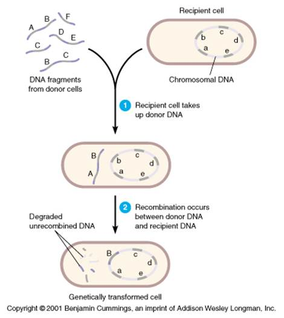
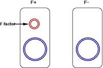
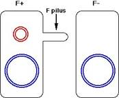
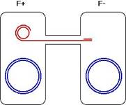
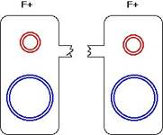
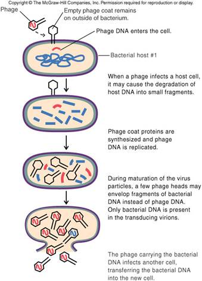
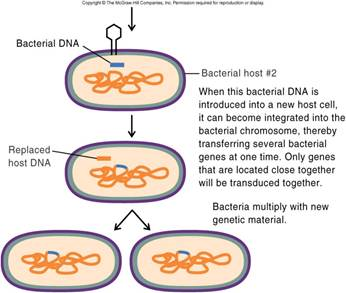

AMBE 101 :: Lecture 12 :: RECOMBINATION IN BACTERIA

Transfer of Genetic Material in Bacteria
The process of transfer of genetic material and recombination is very interesting bascterial recombination is given (PPT. an overview of bacterial recombination).The three main mechanisms by which bacteria acquire new DNA are transformation, conjugation, and transduction. Transformation involves acquisition of DNA from the environment, conjugation involves acquisition of DNA directly from another bacterium, and transduction involves acquisition of bacterial DNA via a bacteriophage intermediate.
Transformation
Transformation is the process by which bacteria pick up DNA from their environment. The DNA may come from a variety of sources, but most likely it is the remnants of DNA from dead bacterial cells.

In order to become successfully transformed, bacteria must be competent. This means that the bacteria are expressing the appropriate enzymes (the 'transformation machinery') required to transport the exogenous DNA into the cell. Therefore, the correct genes must be expressed in order to carry out transformation. Expression of these genes depends on the growth conditions: bacteria most likely to be competent are dividing rapidly, but nutrients in the environment are becoming limited. (For more on the control of gene expression, see the module on bacterial gene regulation.
In transformation, a cell surface receptor binds to DNA in the environment. After binding, the DNA is transported across the membrane by the transformation machinery. As this occurs, one strand of the DNA is digested away by an exonuclease, so that the DNA that enters the cell is single stranded. This promotes recombination, as long as the DNA taken up is sufficiently homologous to the host DNA to allow recombination to occur. The recombination that occurs is one-way (non-reciprocal); unlike the exchange of strands diagrammed in the module on recombination, in this case the new DNA will simply replace a strand of the host DNA. The replaced segment of host DNA will be degraded. If the new DNA is of a different allelic nature than the host DNA, a gene conversion event can occur. This is what happened in the example mentioned above: the avirulent strain of S. pneumoniae had a mutation in a gene required for production of the bacterial capsule. Heat killing the virulent cells (which contained the wild-type capsule gene) caused the release of fragments of the dead cells' genomes. Some of the avirulent cells picked up a piece of DNA containing the wild-type capsule gene, and underwent gene conversion so that they were wild type for that gene, causing them to become virulent.
Conjugation
Conjugation is a mating process involving bacteria. It involves transfer of genetic information from one bacterial cell to another, and requires physical contact between the two bacteria involved. The contact between the cells is via a protein tube called an F or sex pilus, which is also the conduit for the transfer of the genetic material.
Basic conjugation involves two strains of bacteria: F+ and F-. The difference between these two strains is the presence of a Fertility factor (or F factor) in the F+ cells. The F factor is an episome that contains 19 genes and confers the ability to conjugate upon its host cell. Genetic transfer in conjugation is from an F+ cell to an F- cell, and the genetic material transferred is the F factor itself. Here is an overview of the process:
Basic conjugation occurs between an F+ cell and an F- cell. The difference between these two types of cells is the presence or absence of the F (fertility) factor, which is a circular DNA molecule independent of the bacterial chromosome (the larger circular molecule. |
 |
The F+ cell initiates conjugation by extending an F pilus toward the F- cell. Among the genes present on the F factor are the genes encoding the proteins required for pilus construction. |
 |
The F pilus, when finished, temporarily connects the two cells. On strand of the F factor is nicked, and begins unwinding from the other strand. The nicked strand begins to transfer through the F pilus to the F- cell. As it does so, this strand begins to be replicated, as does circular strand remaining behind in the F+ cell. |
 |
Eventually, the nicked strand completely passes through to the recipient cell, and is completely replicated. This process produces a new F factor in the recipient cell. The pilus is broken, severing the connection between the two cells. Since both cells now contain an F factor, both cells are F+. The new F+ cell (which was the F- cell, can now initiate conjugation with another F- cell. |
 |
Recombination rarely occurs with this kind of conjugation. This is because the F factor is not homologous to the DNA in the bacterial chromosome. As we will see, however, there are variations of this basic conjugation process that allow recombination to occur.
Conjugation Involving Hfr Bacteria
Occasionally, the F factor integrates into a random position in the bacterial chromosome. When this happens, the bacterial cell is called Hfr instead of F+. Hfr bacteria are still able to initiate conjugation with F- cells, but the outcome is completely different from conjugation involving F+ bacteria:
As mentioned above, Hfr cells are formed when the F factor integrates into the bacterial chromosome. This integration occurs at a random location. |
The Hfr cell is still able to initiate conjugation with an F- cell. |
When DNA transfer begins, the Hfr cell tries to transfer the entire bacterial chromosome to the F- cell. The first DNA to be transferred is chromosomal DNA, and the last DNA to be transferred will be the F factor DNA. |
Transfer of the bacterial chromosome is almost never complete. Pili are fairly fragile structures, and shear forces tend to break the pilus, disrupting DNA transfer before the entire chromosome can be transferred. As a result, the F factor itself is almost never transferred to the recipient cell. This cell will remain F-. This cell will receive new DNA from the Hfr cell however, and this new DNA can undergo recombination at a high frequency with the host chromosome, because the DNA sequences will be homologous. In fact, Hfr is short for 'high frequency recombination'. This recombination can result in gene conversion events, if the transferred DNA and the corresponding region of host DNA contain different alleles of the same gene. |
Mapping Genes on Bacterial Chromosomes
Bacteria, since they are usually haploid, cannot have their chromosomes mapped by the same techniques as eukaryotes (For a reminder of how this works, see the module on linkage and mapping). They can, however, be mapped by using Hfr bacterial conjugation. For example, imagine that an F- cell has mutant alleles of two genes, a and b (the F- would therefore be a-, b-). If this cell undergoes conjugation with an Hfr cell that is a+, b+ (in other words, wild type), the F- cell should undergo gene conversion to a+, b+ when both of those genes have been transferred by conjugation. By determining how long it takes the b gene to transfer after the a gene has transferred, it is possible to get a relative idea of how far apart the two genes are on a chromosome.
The experiment would be done this way: a+, b+ Hfr cells would be mixed with a-,b- F- cells. The time of mixing would be designated 'time zero'. At regular intervals, a small amount of the mixture would be removed and conjugation would be disrupted using a blender (the shear force of the blender would cause any pili to break). These bacteria would then be tested for gene conversion (for example, if the mutations rendered the F- bacteria auxotrophic, the bacteria could be tested by growing them on minimal medium, or minimal medium supplemented with the necessary nutrient required because of one or the other mutation). If the a gene was converted to wild type at 8 minutes after time zero, and the b gene was converted to wild type at 19 minutes after time zero, then the distance between the two genes would be '11 minutes' (because that was the difference in time required to transfer the b gene compared to the a gene). Bacterial map distances are always expressed in minutes, because of this technique.
F' Conjugation
Just as F factors can occasionally integrate into the bacterial chromosome (producing an Hfr cell from an F+ cell), integrated F factors can occasionally excise themselves from the bacterial chromosome. If this excision occurs properly, the Hfr cell becomes an F+ again. The excision is sometimes sloppy, however, and the F factor takes a small segment of the bacterial chromosome with it. Some of the chromosomal DNA has therefore become associated with the episome. When this happens, the cell is called an F'.
Conjugation involving F' cells allows for the possibility of recombination, as shown below:
The F' cell has a full complement of chromosomal genes; however, some of those genes are now on the episome. F' cells are able to initiate conjugation with F- cells because of the presence of the F factor. |
When the F factor begins to transfer its DNA to the recipient cell, it will transfer the small segment of chromosomal DNA as well. |
Just as in the F+/F- mating, both cells wind up with a copy of the episome. The cell that was F- now has the F factor (along with the piece of chromosomal DNA) and is therefore now F'. This cell, however, also has a complete chromosome, so it will be diploid for the segment of chromosomal DNA on the episome. Such a partially diploid bacterial cell is called a merozygote. The chromosomal DNA on the episome can undergo recombination at high frequency with its homologous sequence on the chromosome. |
Transduction
Transduction involves the exchange of DNA between bacteria using bacterial viruses (bacteriophage) as an intermediate. There are two types of transduction, generalized transduction and specialized transduction, which differ in their mechanism and in the DNA that gets transferred. Before we can address these processes, however, we need to understand the life cycle of a bacteriophage.
When a phage infects a bacterial cell, it injects its DNA into the cell. The viral DNA is replicated numerous times, and viral genes are expressed, producing the proteins that make up the viral capsid (or protein coat) and nucleases that digest the host genome into fragments. The newly replicated viral DNA molecules are packaged into viral capsids, and the bacterial cell is lysed (burst, and therefore killed), releasing hundreds of viral progeny, which then go on to infect other cells.
Generalized Transduction
Sometimes, during bacteriophage replication, a mistake is made, and a fragment of the host DNA gets packaged into a viral capsid. The resulting phage would be able to infect another cell, but it would not have any viral genes, so it would not be able to replicate. The cell infected by this phage would survive, and would have an extra piece of bacterial DNA present, which could undergo recombination with the host chromosome, and perhaps cause a gene conversion event. Because it is a random fragment that gets packaged into the viral capsid, any segment of the bacterial DNA can be transferred this way (hence the name 'generalized').
Specialized Transduction
Specialized transduction occurs only with certain types of bacteriophage, such as phage lambda. Lambda has the ability to establish what is called a lysogenic infection in a bacterial cell. In a lysogenic infection, the viral DNA becomes incorporated into the host chromosome, much as the F factor did in Hfr cells. In a lysogenic infection by lambda, the DNA integrates into a very specific spot in the host chromosome. The integrated viral DNA can remain integrated for long periods of time, without disturbing the cell. Under the appropriate conditions (the regulation of this is very complex, so don't worry about it), the viral DNA will excise itself from the chromosome, and enter the lytic phase, in which the virus replicates just as described above. The cell gets lysed, and new bacteriophage particles are released to infect other cells. As with excision of the F factor (when Hfr cells become F'), sometimes the excision of lambda is sloppy, and some bacteria DNA is excised along with it. When the resulting virus infects another cell, it will pass that bacterial DNA into the cell, along with its own DNA. If the infected cell survives (it can happen; there are bacterial defenses against viral infection), it will contain a new piece of bacterial DNA, which can undergo recombination and possibly cause gene conversion. Because the viral DNA integrates into a specific location, when it excises, the bacterial DNA removed with it will be the same in all cases. Therefore, the DNA transferred to the second cell will be the same segment of the bacterial chromosome. This is why this process is called 'specialized' transduction.

Bacterial Recombination: Summary
Bacteria can pick up loose DNA in their environment through the process of transformation. The newly acquired DNA is rendered single stranded, and can recombine with the host chromosome.
- Bacteria can exchange DNA through the process of conjugation. The F factor confers the ability to initiate conjugation. If the F factor alone is transferred, no recombination will occur. Under certain circumstances, chromosomal DNA can be transferred to the recipient cell. In these cases, recombination will occur.
- Bacteria can receive bacterial DNA from viruses through the process of transduction. Bacterial viruses can accidentally pick up pieces of bacterial DNA. When they subsequently infect a cell, they transfer the pice of bacterial DNA, which can undergo recombination with the host bacterial chromosome.
- The result of recombination in the above cases may be gene conversion, in which a mutant allele becomes wild-type or vice versa.
- Conjugation involving Hfr bacteria can be used to map genes along the bacterial chromosome. This done by determining in what order genes are transferred during conjugation, waht the time difference is between the transfer of genes.
Bacteria do not reproduce sexually but can acquire new DNA through transformation, transduction or conjugation.These natural processes have been modified so that DNA can be deliberately incorporated into host microbes- even genes that would normally never be transferred this way.
| Download this lecture as PDF here |